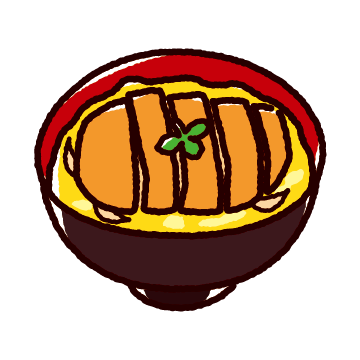

超簡単・三浦流
ダイエットカウンター
明日食べていい食事量がリアルにわかる！
これさえ守れば寝ててもやせる！
着目したのは「基礎代謝」。人間は運動をしなくても基本的な生命維持だけでカロリーを消費します。 夜寝て、朝起きるだけで体重は減っています。自分自身の基礎代謝を理解した上で食事量や運動量を考えるための「見える化」サービスです。
名前
性別
男性
女性
身長 (cm)
体重 (kg)
年齢
計算結果（基礎代謝）
移動
移動なし（0kcal）
徒歩15分（50kcal）
自転車15分（70kcal）
自動車運転15分（15kcal）
仕事
仕事せずゴロゴロ（0kcal）
デスクワーク8時間（400kcal）
立ち仕事8時間（600kcal）
フィールドワーク8時間（800kcal）
職人仕事8時間（2400kcal）
運動
運動なし（0kcal）
ジム30分（200kcal）
水泳30分（600kcal）
走る30分（200kcal）
計算結果（運動負荷）
朝食
朝食抜き（0kcal）
ちょっと（150kcal）
かるく（350kcal）
ふつうに（700kcal）
ガッツリ（1000kcal）
デカ盛り（1500kcal）
彦麿呂（2000kcal）
昼食
昼食抜き（0kcal）
ちょっと（150kcal）
かるく（350kcal）
ふつうに（700kcal）
ガッツリ（1000kcal）
デカ盛り（1500kcal）
彦麿呂（2000kcal）
夕食
夕食抜き（0kcal）
ちょっと（150kcal）
かるく（350kcal）
ふつうに（700kcal）
ガッツリ（1000kcal）
デカ盛り（1500kcal）
彦麿呂（2000kcal）
間食
おやつ抜き（0kcal）
ちょっと（150kcal）
かるく（350kcal）
ふつうに（700kcal）
ガッツリ（1000kcal）
デカ盛り（1500kcal）
彦麿呂（2000kcal）
計算結果（C）
メッセージ（D）
全計算
保存